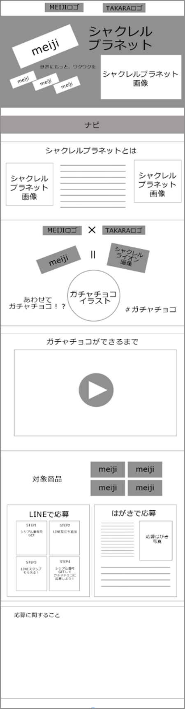

- 制作過程 -
【 概要 】
訓練校でのグループワーク（4名）において、
明治チョコレートの販売促進を目的とした企画を提案し、
そのためのランディングページを作成しました。
明治チョコレートとシャクレルプラネットの画像を
使用しているため、ワイヤーフレームのみ記載いたします。

Concept 「 世界にもっと、ワクワクを 」
ガチャガチャの何が出てくるかわからないドキドキ感と
楽しみなワクワク感を、
明治チョコレートでも感じてほしいと考え、
シャクレルプラネットとコラボすることに決めました。
企画
「 明治チョコレートを買って、ガチャチョコをGETしよう 」
チョコレートを購入し、パッケージの裏のシリアルナンバーを
3回ゲットすることで応募可能。ガチャガチャのカプセルに入った、
シャクレルプラネット型のチョコレートが300名様に当たる。
シャクレルプラネットは国内でも海外でも人気で、
シリーズがいくつもあり、第二、第三弾など継続的なコラボが可能。
ガチャガチャに入ったチョコレートで、「 ガチャチョコ 」と
呼びやすい名前をつけることで、SNSでハッシュタグをつけて宣伝ができ、
当選後も宣伝効果が続く。
応募方法をはがきだけでなく、LINEでも応募可能にすることで、
気軽に応募ができる。さらにLINEスタンプをプレゼントで、
ガチャチョコが当選しなかった方にも満足感もあり、
数種類あるスタンプを集めるのに、チョコ購入量が増加。
Target
ガチャガチャが好きな人。動物が好きな人。
インパクトがあり、コアなファンも多く、コラボすることで
ファンだけでなく、ガチャガチャ好きや動物好きも集客できる。
Design・Color
シャクレルプラネットの動物が住んでいる世界（草原や南極）を
崩さないようにしました。
チョコの茶色を、見出しや文字色に使っています。
カラフルに仕上げることで、ワクワク感を演出しています。
感想・反省
なかなかアイディアがまとまらず、企画だけで2日近く使ってしまいました。
4日間という短い中で、時間配分の大切さをすごく実感しました。
最終的には面白いアイディアが出たが、目的のチョコの販売促進ではなく、
その部分だけを宣伝するページになってしまった。
チョコの購入を促す、購入ボタンの設置が何か所かにあれば良かった。
また、「 ガチャチョコ 」だけでは、シャクレルプラネット要素がなく、
もう少し考えればよかった。